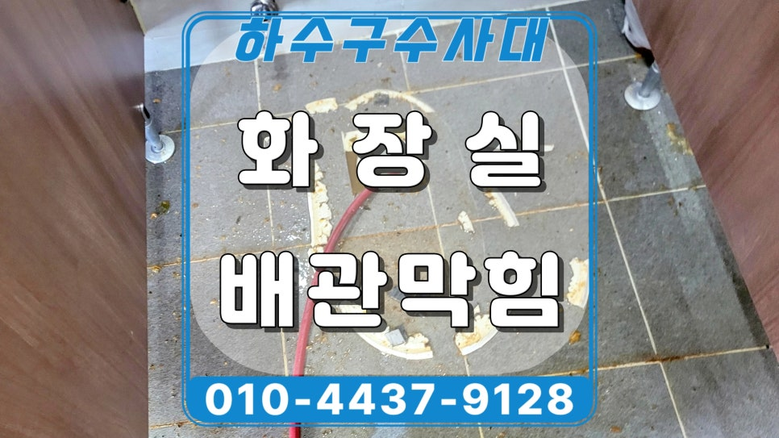
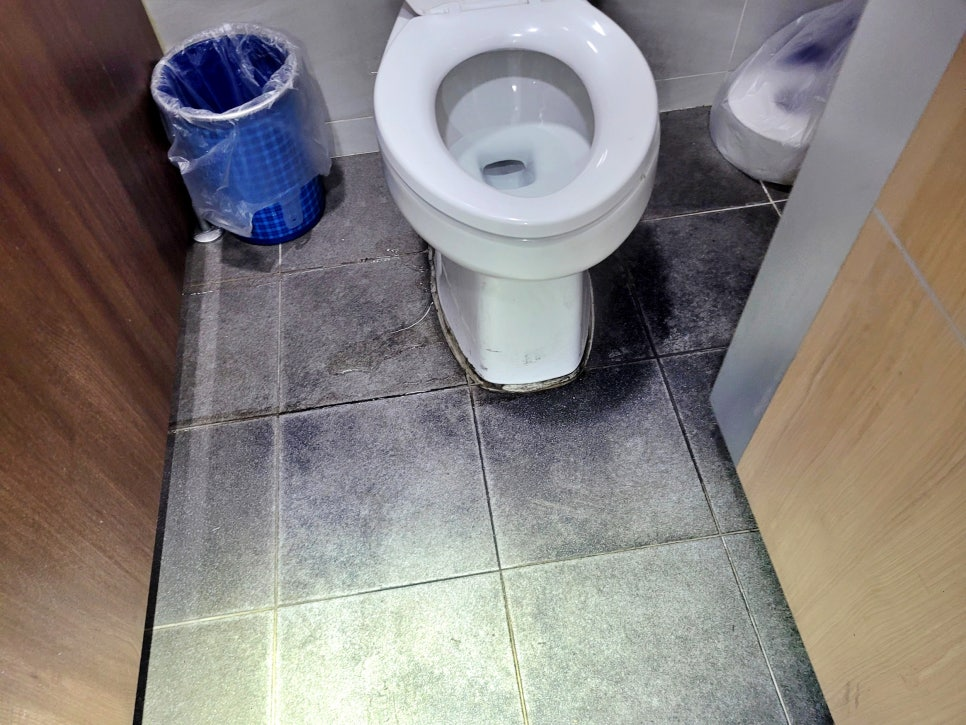
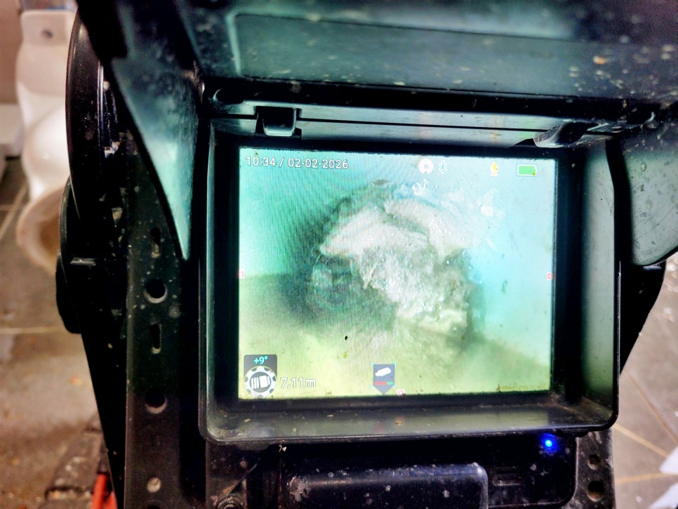
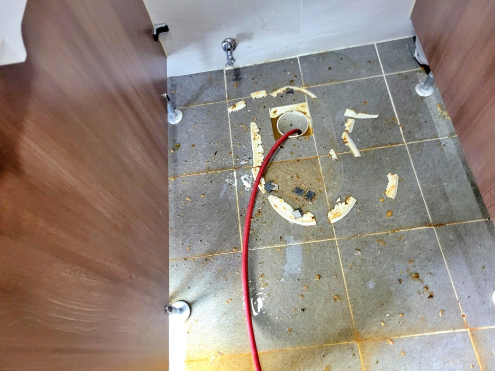
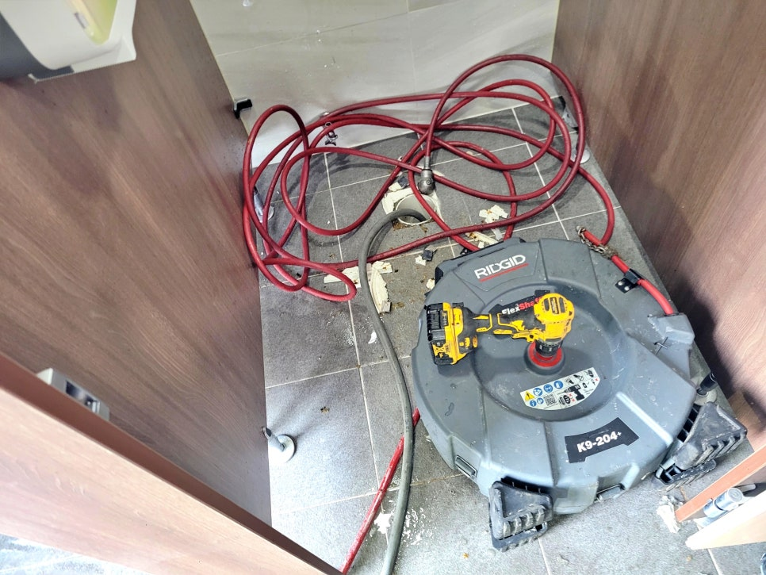
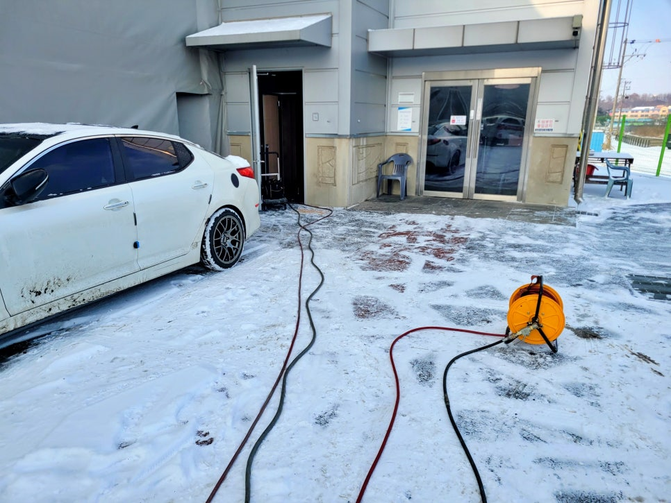
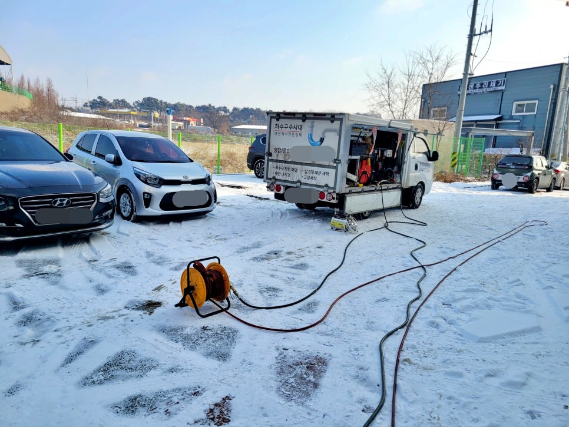

🏠 화성시 화장실 변기역류, 우정읍 오수관 동파막힘으로 물이 올라와요
화성 우정읍 변기막힘 전문 시공 후기

📋 작업 개요
- 위치: 화성 우정읍, 우정읍, 화성
- 서비스 유형: 변기막힘, 하수구막힘, 배관막힘, 역류해결, 뚫는업체, 배관청소, 고압세척
- 작업 일시: 2026. 2. 14. 16:37
- 업체명: 하수구수사대 (010-5615-2118)
🔍 문제 상황
화성시 남녀 화장실 변기역류,
우정읍 오수관 동파 막힘으로
물이 올라와요.
환영합니다.
화성시 우정읍 변기역류 배관청소
전문업체 하수구수사대입니다.
오늘 저희가 소개할 현장 후기는
화성 우정읍의 공장 화장실에서
변기에 물을 내리면 바닥 틈새로
역류한다는 연락을 받고 출동한
실제 사례입니다.
화성시 화장실 변기역류 현장 이미지
화성시 우정읍 화장실 변기역류
현장에 도착했을 때는 한파가
이어졌던 시기여서 배관 동결이
의심되는 상황이었는데요.
화장실에 들어가 직접 물을 내려
보니 정상적으로 내려가지 않고
오히려 바닥 틈새로 오수가 넘치기
시작했습니다.
그렇다면 이번 현장은 왜 이러한

🔎 원인 분석
💡 전문가 진단: 화성시 남녀 화장실 변기역류,우정읍 오수관 동파 막힘으로물이 올라와요.
문제가 발생하게 됐을까요?
그 원인과 해결 과정을 지금 바로
살펴보겠습니다.
1. 화성시 화장실 변기역류 원인은?
얼음으로 막힌 오수관 내부 모습
먼저 남자 화장실 변기를 탈거한 뒤
내시경 카메라를 투입해 내부 상태를
확인했는데요. 화면 속에는 오물과
얼음이 뒤엉켜 막고 있었습니다.
공장 관계자분께 내시경 화면을 직접
보여드리며 상황을 자세히 설명드리고
제일 먼저 플렉스 샤프트 시공으로
막힌 곳을 뚫기 시작했는데요.
플렉스 샤프트 시공 과정
그 후 내부 깊숙한 곳에 위치한
얼음과 오물이 남아 있어 바로
고압세척 장비를 투입해 강한
수압으로 막힌 곳을 깨끗하게
뚫으며 배관 청소까지 동시에
진행했습니다.
참고로
이번 화성시 화장실 변기역류 현장은

🔧 작업 과정
건물 외벽에 설치된 구조였는데요.
장기간 이어진 한파로 오수관이 얼어
배수가 되지 못한 것이 1차 원인이며
그 상태에서 오물이 쌓이며 완전히
막혀버린 상황이었습니다.
여기에
변기역류 2차 원인으로 변기와 오수관
연결 부위가 완벽하게 연결되어 있지
않은 상태에 바닥 방수 매지가 오래돼
유실된 틈으로 물이 샌 것이었죠.
우선 남자 화장실 작업을 마무리한 뒤
여자 화장실도 같이 점검했는데요.
역시 동일하게 오물과 얼음이 내부를
막고 있어서 고압세척 청소 작업을
진행해 모두 제거했습니다.
원인을 고압세척과 샤프트 작업으로
완전히 해결한 후에는
바닥 방수 매지 작업까지 완료한 모습
철거했던 변기를 위 화면과 같이
오수관과 밀착 연결시켰으며
마지막으로 바닥 매지 작업까지
깔끔하게 시공해 드려 더 이상
문제가 재발하지 않도록 신경 써
정리했습니다.
2. 오늘의 시공 후기를 마치면서
오늘 소개 드린
화성시 화장실 변기역류 원인은 오랜
한파에 오수관 내부가 얼면서 막힘
현상이 발생한 것이고요.
화성시 배관청소 전문 업체인 저희
하수구수사대가 고압세척 작업으로
신속하게 뚫어드리며 미흡한 변기
연결 부위와 방수 시공까지 추가해
깔끔하게 해결해 드린 사례입니다.


✅ 작업 완료
지금 만약
변기 물 내림이 느리거나 바닥에서
물이 스며 나온다면 주저 마시고 바로
하수구수사대를 찾아 주십시오.
지금까지
"화성시 화장실 변기역류, 우정읍
오수관 동파 막힘으로 물이 올라옴"
후기를 정독해 주셔서 감사합니다.
#화성시우정읍변기역류 #화성시화장실변기막힘 #화성화장실변기막힘역류 #화성시공장화장실막힘 #화성변기막힘역류전문가 #화성변기막힘잘뚫는곳 #우정읍화장실변기막힘




⚠️ 하수구 배관 막힘 예방 및 관리 가이드
- ✅ 머리카락, 비닐, 물티슈 등 물에 분해되지 않는 이물질은 하수구 유입을 절대 금지해 주세요.
- ✅ 하수구 거름망을 씌우고 모여진 이물질은 주기적으로 쓰레기통에 바로 비워주셔야 합니다.
- ✅ 배관 노후가 심할 경우 이물질이 더 쉽게 걸리므로 주기적인 배관 세척(고압세척 등)을 권장합니다.
- ✅ 작업 후 1년 이내 재발 시 하수구수사대에서 무상 A/S 보증 서비스를 제공합니다.
💡 핵심 정리
- 확실한 장비 작업(내시경 점검 및 샤프트 스케일링)으로 원인을 뿌리 뽑습니다.
- 작업 후 1년 이내에 동일한 부위 재발 시 100% 무상 A/S 서비스를 보장합니다.
- 서울 · 경기 · 인천 전 지역에 24시간 언제든 긴급 출동할 수 있도록 항시 대기 중입니다.
❓ 자주 묻는 질문 (FAQ)
🚨 화성 우정읍 변기막힘 문제로 고민이신가요?
정확한 원인 진단과 확실한 시공으로 재발 없는 해결을 약속드립니다.
24시간 긴급 출동 | 서울 · 경기 · 인천 전지역 | 1년 내 재발 시 무상 A/S